회의 만들기
제목 · 기간(다음 주) · 길이(1시간) 입력, 참석자 6명 초대
역할 지정
참석자별 필수 / 선택 구분
6명의 동료가 다음 주 안에 1시간 회의를 잡아야 하는 상황
겉으로는 캘린더에서 비어 있는 시간을 찾는 문제처럼 보였지만,
실제로는 모두가 수용할 수 있는 시간을 판단하고 합의하는 과정이 필요했습니다.
같은 회사 동료 6명이 다음 주 안에 1시간 회의를 확정해야 합니다.
참석자는 필수 참석자와 선택 참석자가 섞여 있으며, 각자 다른 일정 조건을 가지고 있습니다. 예를 들어 외근, 기존 회의, 변경 가능한 약속, 특정 시간대를 피하고 싶은 선호처럼 조건의 성격은 서로 다릅니다.
따라서 이 과제는 단순히 모두의 비어 있는 시간을 찾는 것이 아니라, 여러 참석자의 조건을 고려해 실제로 회의가 성립 가능하고 수용가능한 시간을 판단해야 하는 상황입니다.
| 항목 | 내용 |
|---|---|
| 관계 | 같은 회사 동료 |
| 인원 | 6명 |
| 기한 | 다음 주까지 모여야 함 |
| 회의 길이 | 1시간 |
| 참석자 구성 | 필수 참석자와 선택 참석자가 함께 있음 |
| 일정 조건 | 외근, 기존 회의, 변경 가능한 약속, 피하고 싶은 시간대 등 |
| 상황 | 여러 사람의 조건이 얽힌 회의 시간 조율 |
이 과제의 primary user는 회의 시간을 확정해야 하는 주최자입니다. 주최자는 참석자들의 일정 조건을 확인하고, 다음 주 안에 회의 시간을 정해야 합니다.
다만 회의 시간이 ‘괜찮은지’는 참석자의 상황에 영향을 받으므로, 참석자는 affected user로 보았습니다.
회의 시간을 정하고 초대하는 사람 다음 주 안에 1시간 회의를 확정해야 합니다.
회의에 참여하거나 응답하는 사람 자신의 일정 조건 안에서 회의에 참여합니다.
처음에는 여러 참석자의 빈 시간을 찾는 부담이 핵심이라고 보았습니다. 하지만 캘린더 겹쳐 보기와 일정 투표 등 기존 도구들이 이 단계를 비교적 잘 지원하고 있었습니다.
그런데 조율 과정을 관찰해 보니 문제는 그 뒤에 있었습니다. 공통 빈 시간을 찾은 뒤에도 주최자는 어느 시간으로 확정해야 할지 판단하기 어려워했고, 확정한 뒤 되돌리는 일도 생기고 있었습니다. 참석자의 역할, 어려운 사유, 조정 가능성이 섞이면 같은 후보 시간도 단순히 가능/불가능으로 판단하기 어렵기 때문입니다.
따라서 빈 시간을 찾는 과정이 아니라, 찾은 후보 중에서 실제로 확정해도 되는 시간을 판단하는 과정을 핵심 문제로 좁혔습니다.
기존 캘린더는 일정이 없는 시간을 후보로 보여주지만, 그 시간이 참석자에게 괜찮은 시간인지까지는 알려주지 않습니다.
행동 패턴 분석 중 한 건에서 주최자는 6명 모두 비어 있는 수요일 오후 2시를 선택해 초대를 보냈습니다. 그러나 필수 참석자 한 명은 오후 3시 고객 미팅 준비 때문에 그 시간을 피하고 싶어 했습니다. 캘린더에는 고객 미팅만 등록되어 있어 오후 2시는 가능한 시간으로 표시됐고, 참석자는 참여할 수 있다는 이유로 불가를 표시하기도, 개인 사정을 미리 설명하기도 어려웠습니다.
결국 참석자는 초대를 받은 뒤 시간 변경을 요청했고, 빠질 수 없는 사람이었기에 주최자는 초대를 취소한 뒤 다른 후보를 찾고 나머지 참석자의 조건을 다시 확인해야 했습니다. 같은 사정이라도 선택 참석자였다면 그대로 진행했을 일입니다. 관찰한 8건에서 주최자는 이런 상황을 피하기 위해 확정에 이르기까지 아래 항목들을 반복해서 확인하고 있었습니다.
출처: 주최자가 단체 회의 시간을 결정하는 과정의 사용자 행동 패턴 8건 관찰
| 단계 | 내용 | 주최자가 확인하는 것 |
|---|---|---|
| 1 | 후보 시간 확인 | 다음 주 안에 가능한 1시간 후보가 있는가 |
| 2 | 참석자 응답 확인 | 각 참석자가 해당 시간에 가능한가 |
| 3 | 역할 확인 | 필수 참석자인가, 선택 참석자인가 |
| 4 | 사유 확인 | 왜 어려운가 |
| 5 | 후보 비교 | 어떤 시간이 상대적으로 나은가 |
| 6 | 확정 판단 | 이 시간을 회의 시간으로 정해도 되는가 |
| - | 실패 | 다시 처음으로 돌아가 재조정 |
기존 도구들은 이 판단을 부분씩만 돕습니다. Outlook은 참석자의 필수/선택 역할을 구분하고 Doodle은 선호를 수집하지만, 두 기준을 한 후보 안에서 함께 반영해 비교하는 일은 여전히 주최자에게 남아 있습니다. 이 때문에 주최자는 여러 경로에 흩어진 정보를 직접 모아 비교해야 했습니다.
예약 페이지를 통해 예약 가능 시간, 회의 길이, 버퍼 타임, 예약 가능 기간, 하루 최대 예약 수 등을 설정할 수 있음
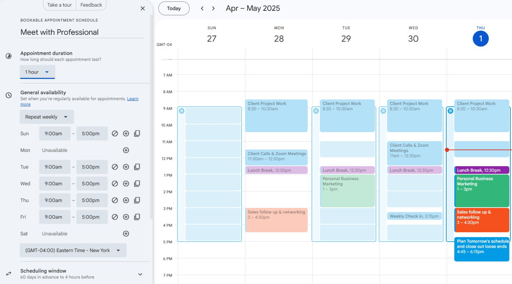
필수 참석자와 선택 참석자를 구분하고, 조직 내 참석자의 캘린더 가용성을 바탕으로 시간을 찾을 수 있음
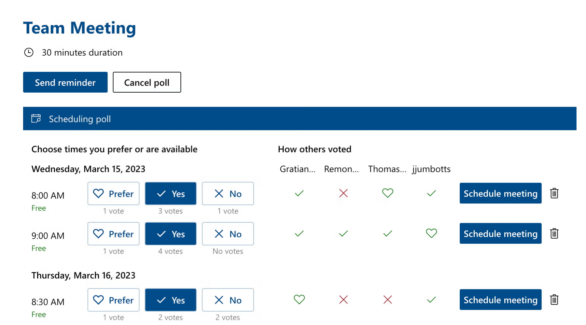
여러 후보 시간에 대해 참석자들의 가능 여부나 선호를 수집하는 그룹 폴 방식
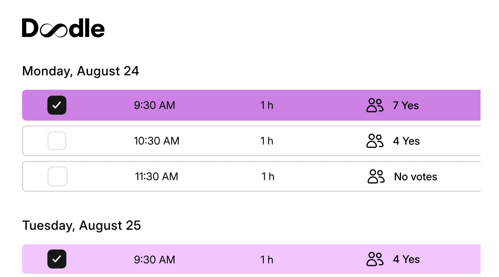
개인/팀 캘린더 기반으로 예약 링크를 만들고, 일정 우선순위나 가용 시간 규칙을 활용할 수 있음
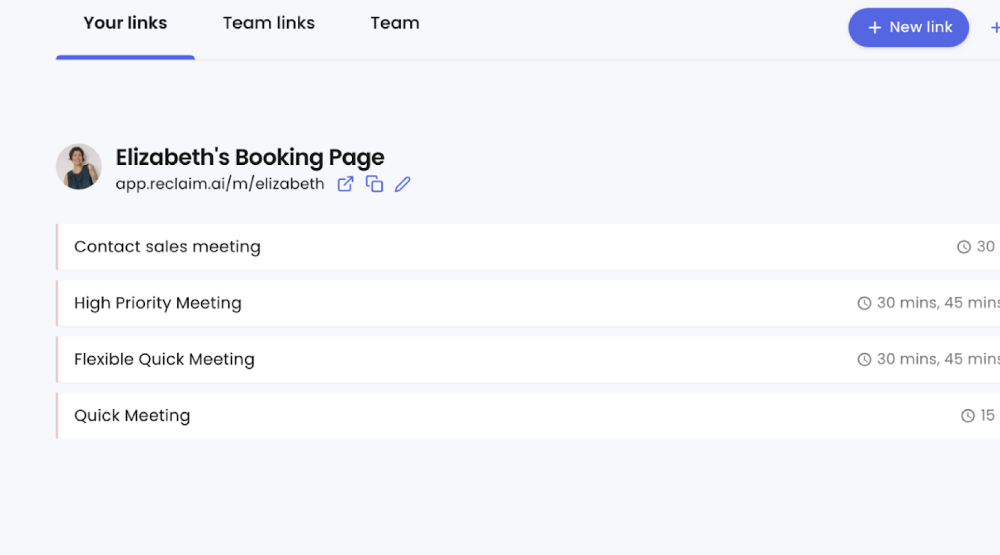
관찰에서 본 상황이 개별 사건이 아닌지 확인하기 위해 사용자 인터뷰를 진행했습니다.
인터뷰에서도 같은 구조가 확인됐습니다. 참석자들은 가능한 시간과 선호하는 시간이 다르지만 구체적인 사유를 공개하기는 부담스럽다고 답했고, 주최자는 후보 시간을 찾는 것보다 최종 시간을 판단하는 데 부담을 느꼈습니다.
출처: 사용자 인터뷰 4인 (주최자·참석자 경험을 나누어 7개 분석 단위로 분류)
| 항목 | 확인하고 싶은 것 |
|---|---|
| 대상 | 회의 조율 경험이 있는 직장인 4명 |
| 구성 | 주최자 중심 1명, 리더급 1명, 팀원급 1명, 참석자 중심 1명 |
| 목적 | 회의 시간 조율에서 주최자와 참석자가 느끼는 부담 확인 |
| 분석 관점 | 주최자 경험 3개, 참석자 경험 4개 총 7개로 나누어 분석 |
주최자들은 단순히 가능한 시간을 찾는 것보다, 여러 조건을 비교한 뒤 최종 시간을 확정하는 순간에 더 큰 부담을 느꼈습니다. 특히 모두가 가능한 시간이 없을 때, 주최자는 필수 참석자 여부, 참석 가능 인원 수, 회의 목적, 시간대 적절성 등을 함께 고려해야 했습니다.
“모두가 가능한 시간이 없을 때가 제일 헷갈려요.”
“다른 사람들의 선호 반영하고 싶죠. 그게 참 어려워서 대충 팀장님 되시는 빈 시간을 골라요”
참석자들은 캘린더가 비어 있어도 실제로는 회의가 부담스러운 경우가 있다고 말했습니다. 집중 업무 시간, 회의 직후, 점심 직후, 퇴근 직전처럼 캘린더상으로는 비어 있지만 회의하기 좋은 시간은 아닌 경우가 있었습니다. 또한 참석자는 이런 선호나 부담을 조율에 반영하고 싶어 하지만, 세부 사유를 직접 설명하거나 주최자에게 그대로 노출하는 것은 부담스러워했습니다.
“회의가 가능한 시간과 좋은 시간은 다릅니다.”
“캘린더가 비어 있어도 회의가 들어오면 부담스러울 때가 있어요.”
“가능하지만 별로인 시간이 많거든요.”
참여자들은 시스템이 후보 시간을 분석해 추천하는 방식에는 긍정적이었습니다. 하지만 시스템이 회의 시간을 자동으로 확정하는 것에는 조심스러웠고, 추천 이유를 함께 확인한 뒤 주최자가 최종 결정하는 방식을 선호했습니다.
“추천은 시스템이 해주고, 최종 결정은 주최자가 하는 구조가 맞다고 봅니다.”
“이 시간은 모두 가능하지만 2명이 직전 회의가 있음 같은 정보를 알 수 있으면 좋겠어요.”
공통 빈 시간을 찾은 뒤에도 참석자의 역할과 일정 조건이 후보마다 달라, 주최자는 어느 시간을 회의 시간으로 확정해야 할지 판단하기 어렵다.
판단에 필요한 정보는 여러 경로에 흩어져 있어 주최자가 직접 모아 비교해야 했고, 잘못 판단하면 확정과 재조율을 반복했습니다. 이에 참석자의 역할과 일정 조건을 함께 고려해 후보를 판단하는 과정을 문제로 정의했습니다.
왜 회의 시간을 고르기 어려울까요?
회의 시간 확정이 어려운 이유는 참석자가 많거나 조건이 많기 때문만은 아니었습니다. 참석자들의 응답이 동일한 기준으로 해석되기 어렵고, 후보 시간마다 비교해야 하는 요소가 달라지기 때문입니다.
참석자들의 역할과 일정 조건은 모두 같은 무게를 갖고 있지 않습니다. 같은 응답이라도 누가 말했는지, 그리고 어떤 일정 사유 때문인지에 따라 회의 확정에 미치는 영향이 달라집니다.
예를 들어 같은 외근 일정이라도 필수 참석자에게 해당하는 경우와 선택 참석자에게 해당하는 경우는 다르게 해석될 수 있습니다. 또한 같은 필수 참석자의 일정 조건이라도 중요한 회의, 변경 가능한 약속, 피하고 싶은 시간대는 동일한 무게로 보기 어렵습니다.
| 일정 조건 | 필수 참석자 | 선택 참석자 |
|---|---|---|
| 외근 | 회의 확정에 큰 영향 | 참석 여부 확인이 필요함 |
| 중요한 회의 | 해당 시간을 선택하기 어려움 | 다른 후보와 함께 비교 가능 |
| 변경 가능한 약속 | 조정 가능 여부 확인 필요 | 상대적으로 영향이 낮음 |
| 피하고 싶은 시간대 | 가능하면 피하고 싶음 | 참고할 수 있는 선호 |
| 상관없음 | - | - |
회의 후보 시간은 단순히 가능하거나 불가능한 시간으로 나뉘지 않습니다. 각 후보마다 참석 가능한 인원, 필수 참석자 포함 여부, 남아 있는 일정 조건, 추가 확인이 필요한 항목이 다릅니다.
즉, 후보 시간마다 감수해야 하는 조건과 확인이 필요한 지점이 다르기 때문에, 주최자는 어떤 시간이 상대적으로 더 확정하기 적절한지 바로 판단하기 어렵습니다.
| 후보 시간 (예시) | 가능한 참석자 | 감수할 조건 | 확인이 필요한 지점 |
|---|---|---|---|
| 화 10:00 | 5명 | 선택 참석자 1명 외근 | 일부 참석자 불참 가능성 |
| 수 14:00 | 6명 | 필수 참석자 1명 점심 직후 회피 | 선호 조건과의 충돌 |
| 목 11:00 | 4명 | 선택 참석자 2명 기존 회의 | 참석 인원 감소 |
| 금 16:00 | 5명 | 변경 가능한 약속 1건 | 조정 가능성 확인 |
시스템이 참석자의 역할과 응답 강도를 바탕으로 후보 시간을 분석해 추천한다면, 주최자는 모든 조건을 직접 해석하지 않고도 더 빠르게 회의 시간을 확정할 수 있을 것이다.
관찰과 인터뷰에서 확인한 것은 같은 후보라도 참석자의 역할과 일정 조건에 따라 다르게 판단해야 하지만, 그 판단의 재료가 조율 과정에서 드러나지 않는다는 점이었습니다. 참석자는 자신의 선호나 부담을 반영하고 싶지만 세부 사유가 그대로 드러나는 것은 부담스러워했습니다.
따라서 이번 설계에서는 조건을 더 많이 보여주는 것보다, 시스템이 조건을 해석해 확정 가능성이 높은 후보를 제안하는 방식으로 가설을 세웠습니다.
주최자는 여러 후보 시간을 직접 비교하는 데 부담을 느낍니다. 따라서 시스템이 참석자의 역할과 응답 강도(불가·비선호)를 바탕으로 후보 시간을 정리해 제안하면, 주최자는 처음부터 모든 후보를 동일하게 검토하지 않아도 됩니다.
참석자는 자신의 선호나 부담이 회의 조율에 반영되길 원하지만, 개인 일정이나 집중 업무 같은 세부 사유가 그대로 공개되는 것은 부담스러워할 수 있습니다.
따라서 가능, 가능하지만 비선호, 불가처럼 세부 사유를 추상화한 응답 방식을 제공하면 참석자는 더 현실적인 상태를 부담 없이 표현할 수 있습니다.
사용자는 시스템이 회의 시간을 자동으로 확정하는 것보다는, 추천 후보와 그 이유를 확인한 뒤 주최자가 최종 결정하는 방식을 더 자연스럽게 받아들일 가능성이 큽니다.
따라서 시스템은 “이 시간으로 확정하세요”가 아니라, “이 시간이 적절해 보이는 이유”를 요약해 보여주는 판단 보조 역할을 해야 합니다.
참석자의 세부 조건을 그대로 노출하지 않고, 시스템이 역할과 응답 상태를 분석해 확정 가능성이 높은 회의 시간을 추천하는 일정 조율 경험
참석자 역할, 가능 상태, 비선호
시스템이 후보 시간별 적합성 분석
추천 후보와 요약 근거 제공
같은 문제를 겨냥한 두 가지 대안을 검토한 뒤, 회의가 만들어진 시점에 해당 기간의 응답을 수집해 시스템이 후보를 추천하는 현재 구조를 택했습니다.
| 검토한 대안 | 택하지 않은 이유 |
|---|---|
| 비선호 시간 사전 등록 피하고 싶은 시간을 캘린더에 미리 저장 | 비선호는 고객 미팅 준비처럼 주별 상황에 따라 달라지는 동적 정보라 미리 입력하기 어렵고, 실제 상황과 어긋날 가능성이 큽니다. 회사마다 캘린더 서비스가 다른 점도 고려해, 회의 요청이 생긴 시점에 해당 기간에 대해서만 응답을 수집하는 외부 서비스 구조를 택했습니다. |
| 주최자가 고른 후보로 투표 후보 3~4개를 먼저 제시하고 가능 여부 수집 | 어떤 후보가 괜찮은지 판단하는 일 자체가 이 문제의 병목이며, 주최자가 더 나은 시간을 놓칠 가능성도 있습니다. 정해진 기간 전체에서 시스템이 후보를 찾아 추천하도록 했습니다. |
모두가 비어 있는 시간뿐 아니라 필수/선택 참석자와 개인 일정 조건을 함께 고려합니다.
연동한 캘린더로 일정을 미리 채워, 참석자의 입력을 ‘확인’ 수준까지 낮춥니다. 사유는 받지 않습니다.
다음 주라는 기한 안에서 현실적으로 회의를 성사시키는 데 집중합니다.
회의 시간은 맥락에 따라 달라질 수 있으므로 추천 이유를 함께 제공해 주최자가 최종 확정 가능하도록 도와야 합니다.
모든 선호를 반드시 만족시키기보다, 시간 선택에 영향을 주는 정보로 다룹니다.
설계 원칙을 지키기 위해 무엇을 얻고 무엇을 내려놓았는지 먼저 정리했습니다. 아래 플로우와 화면의 개별 결정들은 이 세 가지 맞교환 위에 서 있습니다.
개인별 비선호·불가를 숨기면 "왜 안 되는지"의 투명성은 줄어듭니다. 대신 참석자가 솔직하게 응답할 수 있는 환경을 택하고, 투명성은 역할별 집계라는 중립 정보로 대체했습니다.
시스템이 바로 확정하면 가장 빠르지만, 회의에는 화면에 없는 변수가 많습니다. 추천은 시스템이 하고 확정은 주최자가 하도록 통제권을 남겼습니다.
모든 선호를 만족시키는 최적의 선택지보다, 기한 안에 성사되는 "충분히 괜찮은" 후보를 우선했습니다.
전체 흐름을 주최자·참석자·시스템 세 레인으로 나눈 블루프린트입니다. 각 단계에서 사용자가 어떤 액션을 하고 어디에서 기다리는지, 그 사이에 시스템이 무엇을 처리하는지를 함께 표시했습니다.
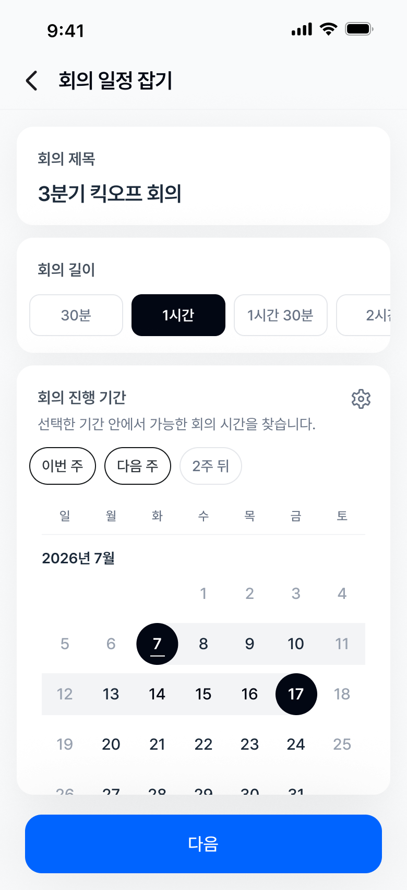
회의 제목, 길이, 진행 기간을 한 화면에서 입력합니다. 기간은 빠른 선택 칩과 캘린더 범위 선택을 함께 제공합니다.
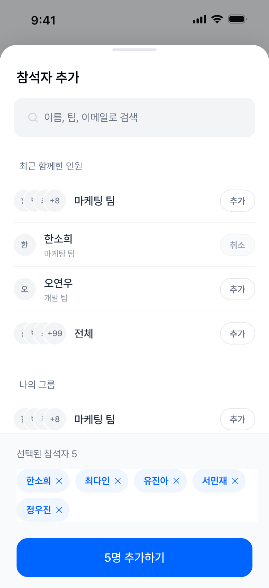
바텀시트에서 참석자를 검색하거나 최근 함께한 사람과 팀을 선택합니다. 현재 화면을 벗어나지 않고 참석자 추가를 마칠 수 있습니다.
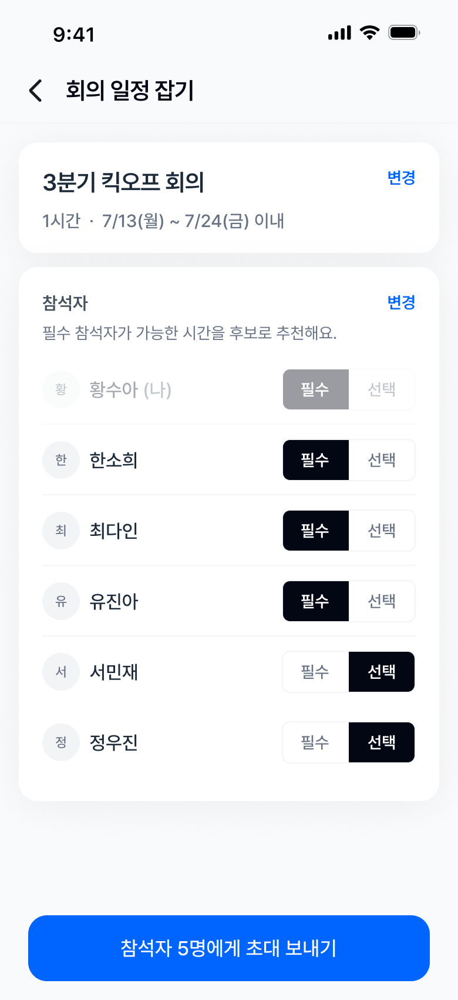
참석자별 필수/선택 역할을 목록에서 지정한 뒤 바로 초대합니다.
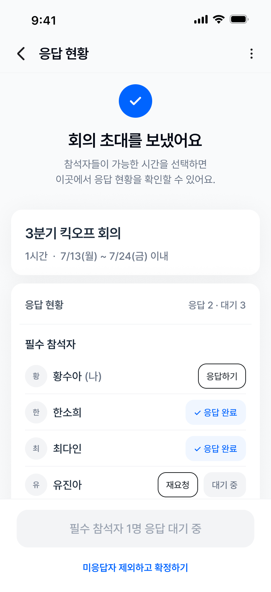
초대 후 참석자별 응답 상태를 확인합니다. 참석자를 필수/선택 그룹으로 나눠 누구의 응답을 기다리고 있는지 보여 줍니다.
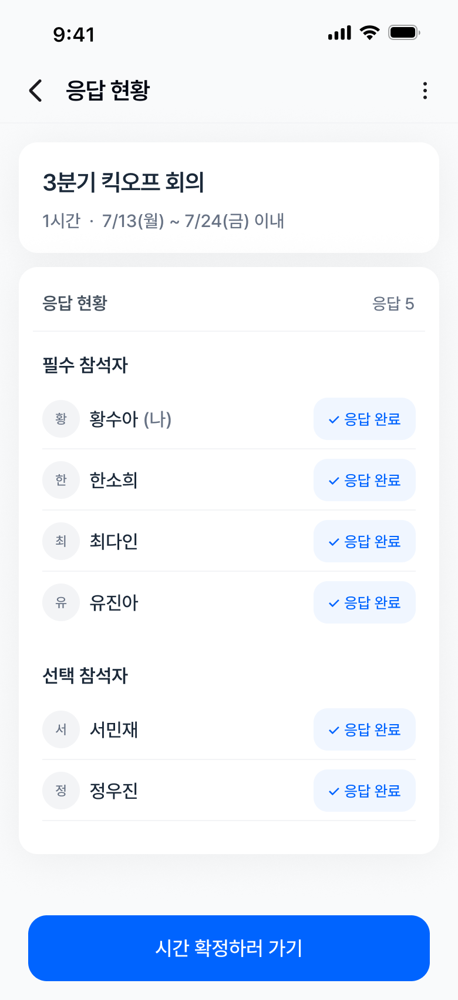
캘린더 일정이 표시된 주간 그리드에서 블록을 눌러 불가 ✕ · 비선호 ~를 표시합니다. 표시하지 않은 시간은 가능한 시간으로 처리합니다.
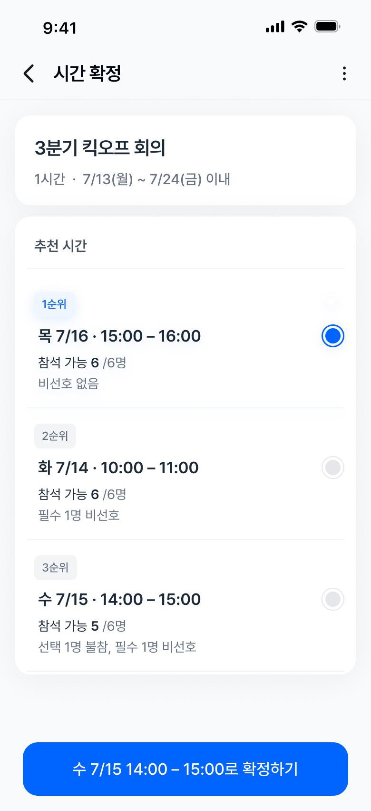
모든 참석자가 응답하면 같은 화면이 완료 상태로 바뀌고, "시간 확정하러 가기" 버튼이 활성화됩니다.
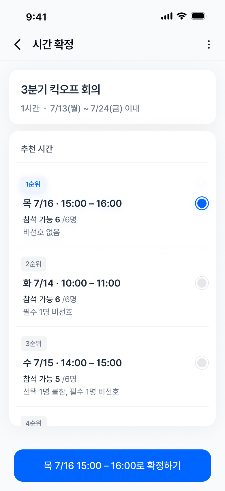
모든 응답이 모이면 참석자 역할과 응답을 반영해 추천 순서대로 시간 후보를 보여 주고, 후보마다 순위의 근거를 요약해 함께 표시합니다.
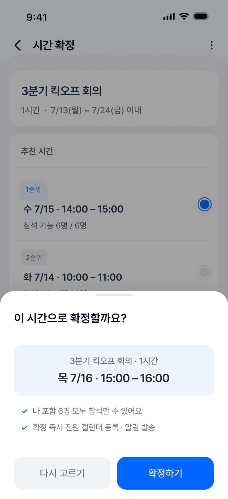
확정 버튼을 누르면 바텀시트에서 선택한 시간과 처리 내용을 확인합니다.
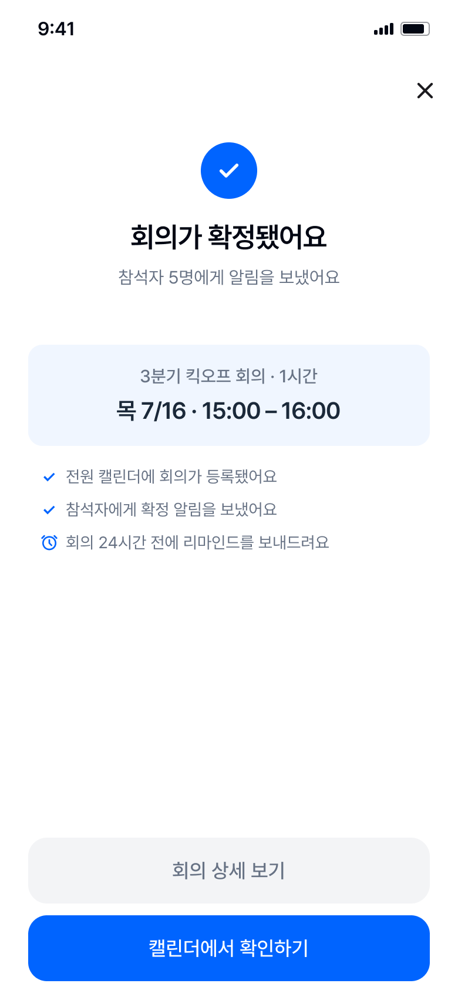
시간을 확정하면 참석자 캘린더 등록과 알림 발송을 함께 처리합니다. 주최자가 일정을 따로 공유할 필요가 없습니다.
회의 조율 과정에서 예외 상황이 발생할 경우 설계 원칙에 따라 다음과 같은 설계로 대응하도록 정리했습니다.
| 상황 | 설계 대응 | 적용 원칙 |
|---|---|---|
| 기한 내 전원 가능한 시간이 없음 | 조건을 한 단계 완화한 차선 후보(예: 선택 참석자 1명 불참)를 참석 가능 인원과 함께 제시 | 완벽한 시간보다 충분히 괜찮은 시간 |
| 필수 참석자가 끝내 무응답 | 주최자가 "미응답자 제외하고 확정" 또는 "응답 마감"을 선택 (프로토타입에 구현) | 최종 결정은 주최자가 한다 |
| 불가 없이 비선호만 존재 | 모든 후보가 성립 가능한 상태 (비선호가 가장 적은 시간을 1순위로 추천) | 참석자 조건은 판단의 재료다 |
| 확정 후 참석자 사정 변경 | 확정 화면에서 재조율 진입점 제공 (다음 단계 후보) | 최종 결정은 주최자가 한다 |
참석자가 이 경험에 진입하는 방식도 함께 고려하여 화면을 설계했습니다.
이미 다양한 캘린더 서비스가 널리 쓰이고 있는 상황에서, 별도의 독립 캘린더를 새로 만들지 않고
기존 캘린더(Google, Outlook 등)와 연동해 참석자의 일정을 가져오는 방식으로 구성했습니다.
회사·개인마다 쓰는 캘린더가 달라도 조율할 수 있도록, 회의 시점에 필요한 기간의 응답만 수집하는 외부 서비스 구조를 전제했습니다.
초대·재요청·확정 알림을 위한 별도 알림 시스템을 새로 구축하지 않고,
조직이 이미 쓰는 채널(이메일, 사내 협업 툴 등)에 올라타는 방식을 전제했습니다.
이 설계의 목표는 정해진 기간 안에 회의 시간을 빠르게 확정하면서도, 참석자의 응답 부담과 확정 후 재조율을 줄이는 것입니다. 이를 확인하기 위한 성과 측정 기준을 다음과 같이 정의했습니다.
| 항목 | 지표 | 설정 이유 |
|---|---|---|
| 세부 지표 1 | 추천 후보 확인 후 확정까지 걸린 시간 | 응답 대기를 제외하고, 주최자가 후보를 비교하고 결정하는 데 걸린 시간을 확인하기 위해 |
| 세부 지표 2 | 확정 후 시간 변경률 확정된 회의 중 시작 전에 시간이 변경된 비율 | 빠른 확정이 다시 시간을 조율하는 상황으로 이어지지 않았는지 확인하기 위해 |
참석자의 응답 부담과 주최자의 추천 이유 이해도는 로그만으로 판단하기 어려워, UT나 설문을 통해 보조적으로 확인할 수 있습니다.
이번 과제는 제한된 조건 안에서 "빈 시간을 찾는 도구"를 "괜찮은 시간을 제안하는 경험"으로 다시 정의하는 데 집중했습니다.